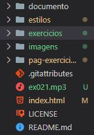

Exercicio 21
Faça um programa em Python que abra e reproduza o áudio de um arquivo MP3.
import random
aluno1 = str(input('Nome do 1º Aluno: ')).capitalize()
aluno2 = str(input('Nome do 2º Aluno: ')).capitalize()
aluno3 = str(input('Nome do 3º Aluno: ')).capitalize()
aluno4 = str(input('Nome do 4º Aluno: ')).capitalize()
alunos = [aluno1, aluno2, aluno3, aluno4]
ordem = random.shuffle(alunos)
print(f'A ordem sorteada pelo professor foi {alunos}')
Anotações
1º Coloque o arquivo em mp3 na pasta principal, junto com o arquivo index. Exatamente como está na imagem abaixo
Existem varias bibliotecas para tocar musica, mas vamos usar o pygame que é utilizado para criar jogos
Para importa o pygame é necessario instalar ele. import pygame, clica em cima dele e baixe utilizando o Pycharm. Já no VSCode consegui instalar usando o terminal e digitando » python -m pip install -U pygame --user